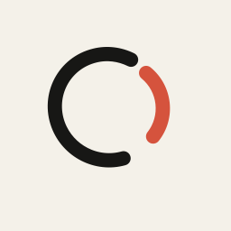

「方案我看过了，预算还要和合伙人确认。周四我们再聊。」
点结果可回到对应原话。没有悄悄发送消息。
AI生成
让每一次重要对话，都有下文。

Talent Signal磁盘安装窗口 · 静态背景与图标布局 · 约 720 × 460
同一份对话、人物和日程，在这台 Mac 上继续。
主入口。填入 HTTPS 工作区地址，登录后在同一份关系上下文里继续。
虚构内容，只读演示。不会发送消息，也不会写入真实工作区。
后续支持从受信任的工作区链接带入地址，再由你确认、登录。新设计
首次启动 · 600–900ms 转场 · 减少动态时直接显示终态
「方案我看过了，预算还要和合伙人确认。周四我们再聊。」
点结果可回到对应原话。没有悄悄发送消息。
预算尚待确认。
周四再沟通，具体日期仍需确认。
准备一次跟进，等待用户决定。
解释已更新。来源仍指向原话；建议保持「等待用户决定」。
惊艳时刻留给「看懂了」 · 三个有来源结果 · 回到原话